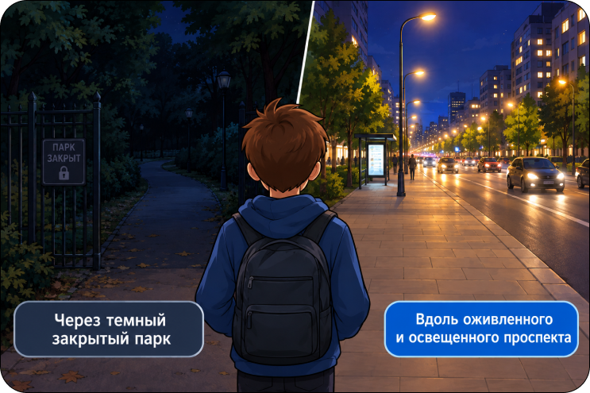

Сюжет первый Ты возвращаешься с тренировки, на улице уже стемнело. Твой привычный путь идет через темный закрытый парк, но есть более длинная дорога вдоль оживленного и освещенного проспекта. Какую дорогу выберешь?
Пойду через парк, так быстрее на 15 минут, да и музыку в наушниках послушаю.
Выберу длинный, но освещенный путь вдоль дороги, где много людей.
❌ Опасно! В темноте в безлюдных местах возрастает риск встретить злоумышленников, а наушники полностью лишают тебя контроля над ситуацией.